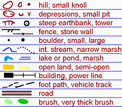
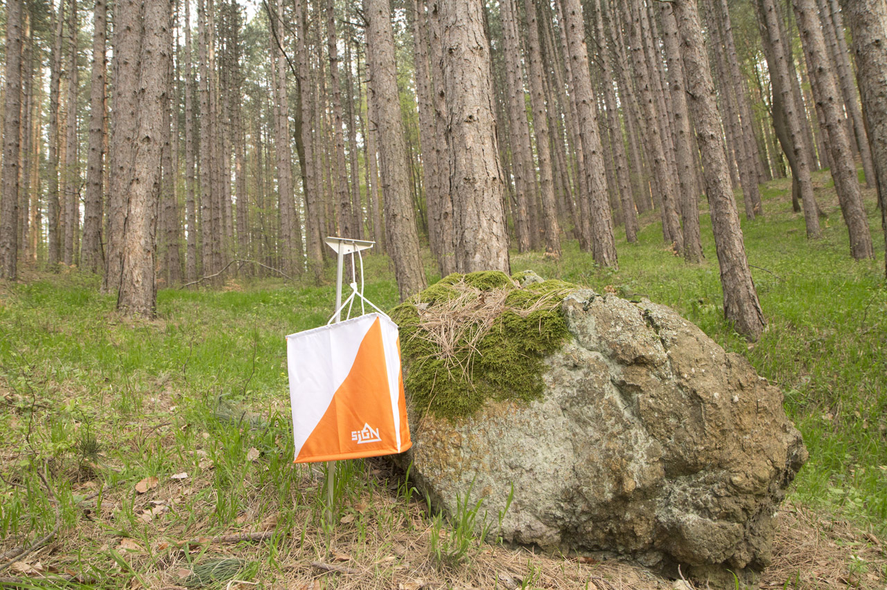

Tips for Succsess
There are many things to consider before your competition begin. Someone may think that he don't need a map or compass because everything is in smartphones. However, it is not. Sport Orienteering do not allow enyone to use smartphones during competition because having only a map and compass in your hands shows your ability to navigate the terrain.
Let's review some tips before your competition!
Map is not difficult to read and it easy to remember the map legend. Map always helps you to quickly find where you are. In addition, if you are lost in the forest, - don't panic! Just try to look around and find the similar legend signs on the map. Also, to be on time, it is important to keep running. In this case, if you are lost and you do not want to stop, it would be a good idea to find a road or foot path.

Next, in most competitions you will have a given direction. On the map you will see circles connected with lines. It shows you in which order you will need to run.
The triangle on the map shows the start position. In addition, this is only what you could se on the map before your competition, if so.
Usually, athletes do not alloed to see the map before comptetitions begin.
The circles on the map show the location of control points that you will need to find. However, during competitions you should be very careful when you find control points physically
because there are different routes for different levels. In other words, it happens frequently that you may find a control point which is not yours. Therefore, all control points are maprked with a unique number.
Don't be so happy if you see the prisme in the forest, especially after a long time trying to find your control point. Always check the number on the prisme! For example, if in your competition you are using cards, you will then need to go back for your previous control point, then check in, and only after that you may continue searching your next control points.
